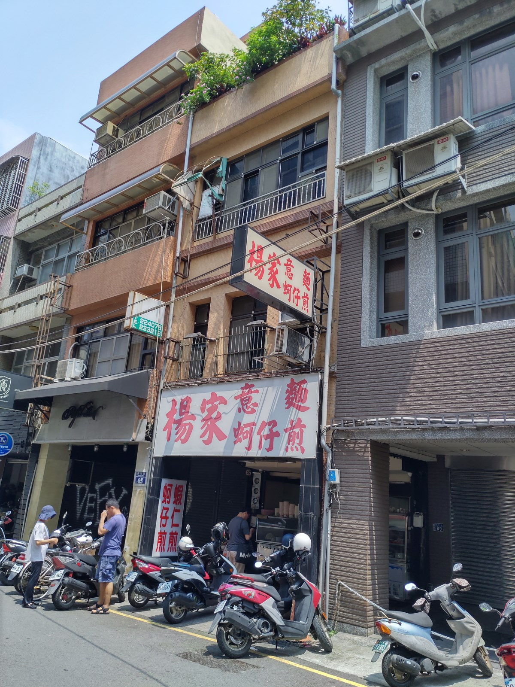
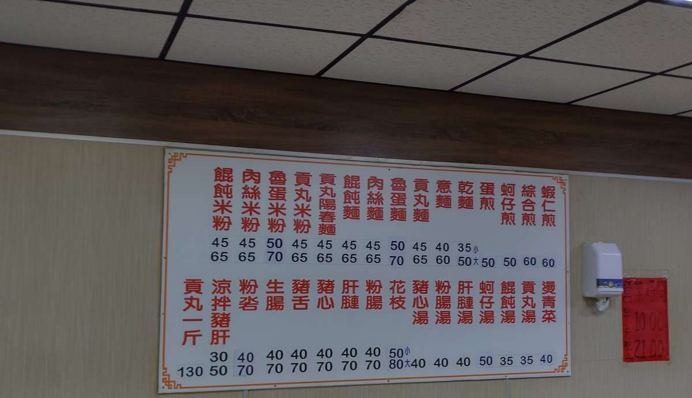
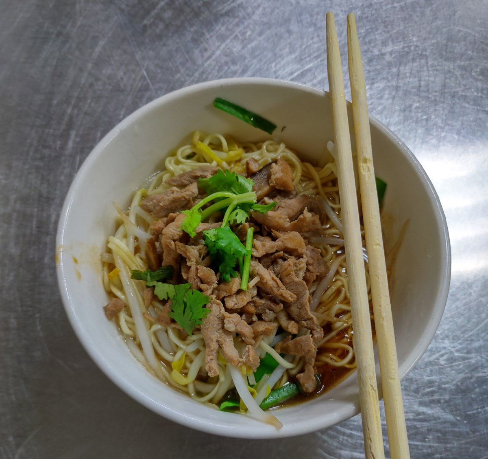
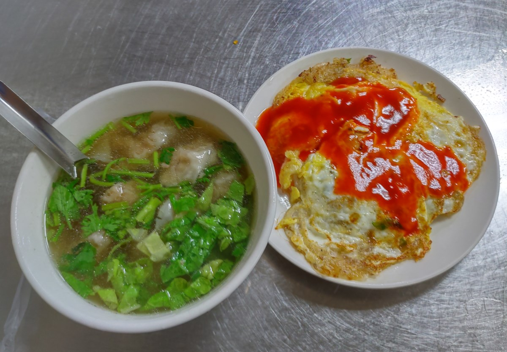

[新竹] 楊家意麵
餐廳名稱: 楊家意麵
地 址: 新竹市勝利路67號
營業時間: 10:00-21:00 週四公休
這是一間新竹老店，但是搬家多次了，這幾年落腳在勝利路這裡， 老客人都能找到，熱門時段容易客滿，今天等了幾分鐘才有座位。 意麵，蚵仔煎 是店家的經典菜色，門外的招牌就寫這兩道菜。 
牆壁上有菜單。另外有點菜單，點菜單有列陽春麵等，如果是意麵就不用勾，真的要改用陽春麵才要勾。 
乾肉絲意麵，中規中矩，還行。 
今天選餛飩湯和 綜合煎(蚵仔加蝦仁)，不錯吃。 
總之，就是一間價格符合預期的小吃店，食物的價格很合理， 就不要要求什麼豪華裝潢，服務態度了，整間店就是沒笑容，但也不會凶， 迅速正確地把訂單執行完，也沒什麼好要求的，可以來吃。